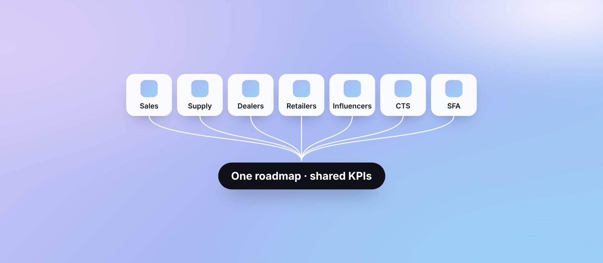

Orchestrating a 7-app enterprise rebuild
Turned seven siloed app projects into one KPI-driven transformation.

Outcomes
Context
Seven interconnected apps (Sales, Supply, Dealers, Retailers, Influencers, CTS, SFA) with multiple owners. Requirements documents disagreed, goals shifted mid-stream, and a Salesforce constraint forced an architectural pivot.
There were no success criteria, no MVP, and no clarity on API or backend readiness. Design rework risk was high.
Two decisions that shaped the program
Custom or Salesforce Lightning? Design planned custom builds for the CTS and SFA apps; the engineering vendor planned to use Lightning's pre-built components. Instead of letting the teams argue it out, I ran a two-week spike: designers produced representative screens, engineers tried to build them. With client IT, business, BCG, engineering and design in one room, we agreed a hybrid: Lightning for internal staff apps, custom for dealer and partner apps.
A loyalty app nobody had scoped. The dealer loyalty app, unchanged since 2013, moved the same KPIs we were trying to lift. Usability tests and a prototype of a better redemption flow showed the client how it was leaking value from their investment. They approved the budget, and the redesign joined the main program.
What I did
- Defined success criteria from one shared set of KPIs
- Set up change control and a decision log
- Ran workshops to separate MVP from enhancements, and to lock data contracts
- Added two feasibility gates, backed by time-boxed technical spikes
The phase-gate model the program ran on
- IntakeRequirements, success metrics, RACI, SOW
- DiscoveryStakeholder map, ambiguity log, KPI mapping
- Gate 1WireframesBackend feasibility, API checks at 60%
- Gate 2UILatency, edge and error states before freeze
- HandoffAnnotated specs, UX acceptance criteria
- QA → UAT → LaunchUX and functional QA, retros
It ran as one transformation, not seven design projects.